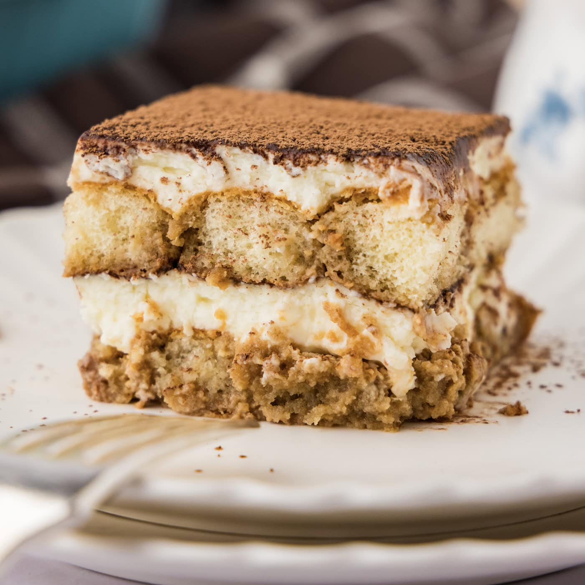

Pâtisserie maison
Recettes d'atelier
Des recettes sucrées et salées, françaises, italiennes et grecques, détaillées pas à pas : quantités précises, temps de repos et astuces pour réussir à coup sûr.
Voir les recettesCatégories
Plats salés
Recettes
Opéra classique
Biscuit Joconde, sirop au café, crème au beurre et ganache au chocolat.
Tiramisù traditionnel
Savoiardi imbibés de café et crème mascarpone légère à la pâte à bombe.
Financiers aux amandes
Petits gâteaux moelleux au beurre noisette et à la poudre d'amandes.
Tarte Tatin
Pommes fermes caramélisées au beurre, cuites sous une pâte brisée puis démoulées à l'envers.
Quiche poireaux, petits pois et saumon
Poireaux et échalotes fondus, petits pois, saumon et fromage râpé gratiné.
Moussaka
Pommes de terre, aubergines rôties, sauce à la viande et béchamel gratinée.